10月17日、開花は約80％まで進みました
10月17日のフジバカマ（原種系）は、私が庭で見た印象では、全体の開花が約80％まで進みました。まだピンク色の蕾は残っていますが、枝先のあちこちで白い糸状の部分が広がり、満開が近づいてきたと感じます。
花壇を少し離れて眺めると、高く伸びた茎の先にも、横へ張り出した枝にも、大小の花房が並んでいます。白くふんわりした花が広い範囲で目立つようになり、ピンク色の蕾と重なって、庭全体が柔らかな色に包まれています。
ただ、すべての花房が同じように開いているわけではありません。よく開いて白い糸状の部分が密に広がった花房もあれば、まだピンク色の蕾がまとまって残る花房もあります。全体としては満開に近づいていますが、近くで見ると、これから咲く花もたくさん控えています。
この日は、アサギマダラ2匹が吸蜜に訪れました。私が見ていた範囲では、吸蜜の約90％がこちらのフジバカマ（原種系）で、10月12日に白フジバカマ（原種系）が吸蜜の中心だったときとは、利用する花の割合が大きく変わっていました。
育ててきたフジバカマの花にとまり、蜜を吸う姿を見ていると、開花を待っていた時間が、蝶を迎える楽しみにつながったことを実感します。
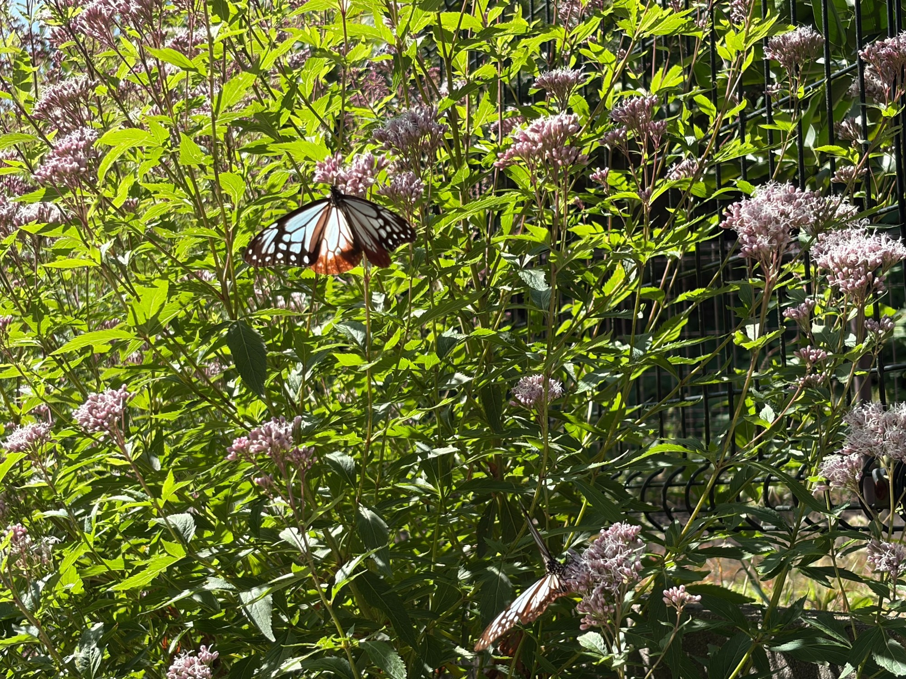
10月12日から5日間で、開いた花の存在感が増しました
前回の10月12日は、ピンク色の蕾が多く残り、その間に開いた花が混じっている姿でした。白い糸状の部分がまとまって広がった花房もありましたが、株全体では、まだ蕾の多さが印象に残っていました。
そこから5日がたち、10月17日は、開いた花が株の広い範囲で目立つ姿になりました。前回も株の各所で開花していましたが、今回は、花壇を眺めたときに白くふんわりした花房が次々と目に入ります。
蕾が密に集まった花房は、ひとつひとつの粒が分かる、引き締まった形をしています。そこから白い糸状の部分が伸びてくると、花房の輪郭が柔らかくなり、同じ枝先でも見た目の印象が変わります。今は、その変化が株のあちこちで重なっています。
10月12日に「これから蕾が開けば、アサギマダラが蜜を吸える花も増えるのではないか」と楽しみにしていました。その後も飛来があり、この日も実際に花を利用してくれました。
しかも今回は、吸蜜の約90％がこちらの原種系でした。花が開いてきたことに加えて、アサギマダラがその花をよく利用する姿を見られたことが、前回からの大きな変化です。
開花の進み方と蝶の訪れを続けて見られることが、今の庭の大きな楽しみになっています。
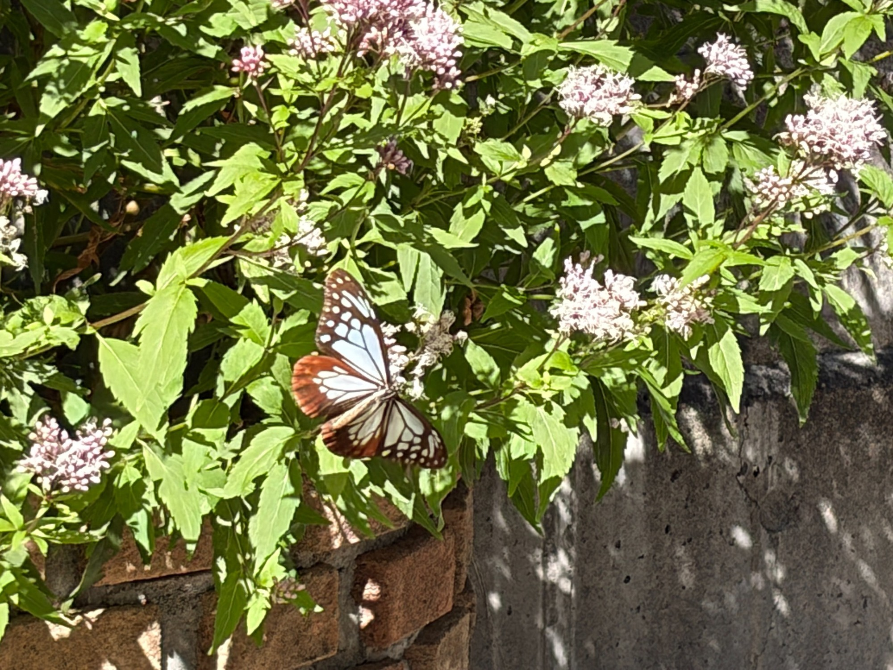
同じ株の中に、これから咲く花と咲き進んだ花があります
花房を近くから見ると、同じまとまりの中にも、閉じたピンク色の蕾と、白い糸状の部分が伸びた花が混在しています。ひとつの花房が一度に全部開くのではなく、小さな花がそれぞれの段階で咲いていることが分かります。
花房同士にも違いがあります。白くふんわり広がった花房の隣に、まだ蕾が多い花房があり、少し離れた枝には、開き始めたばかりのように見える花もあります。一方で、一部には茶色っぽく見える部分もあり、先に開いた花と、これから開く花が同じ株の中に重なっています。
私が「開花約80％」と感じたのは、このような株全体の姿からです。花をひとつずつ数えた数字ではありませんが、蕾が主体だった頃を過ぎ、開いた花がよく目立ち、それでも満開まではもう少し余地がある状態です。
蕾が残っているところを見ると、まだ先の楽しみもあります。すでに咲いている花を眺めながら、その隣で次の花が開くのを待てる、にぎやかな時期になりました。
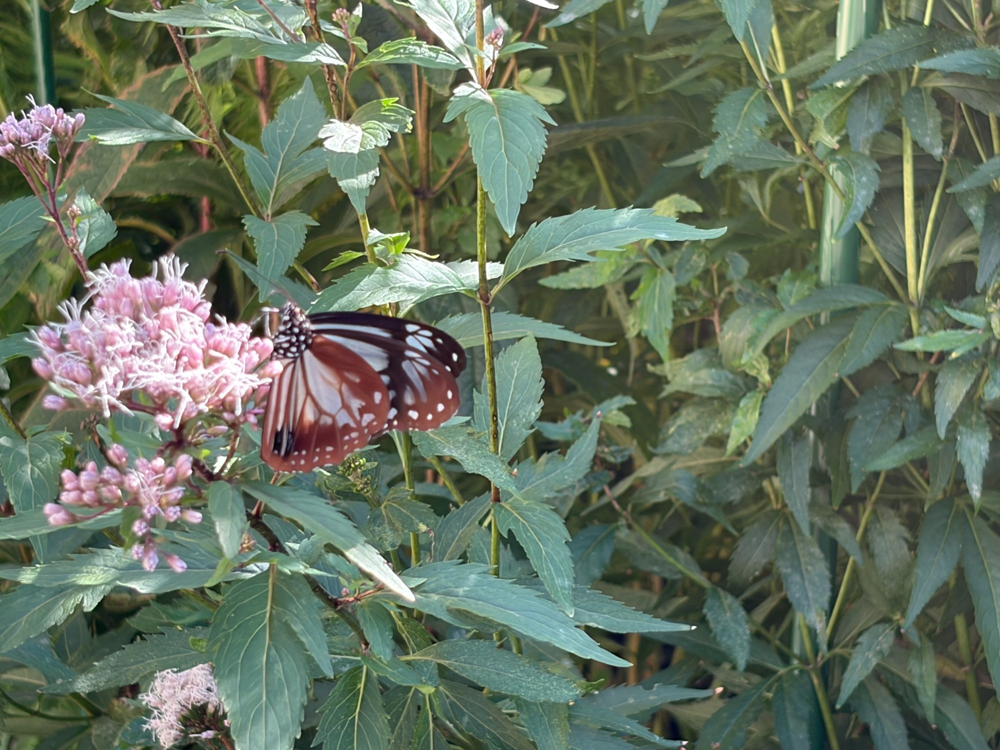
高い枝先だけでなく、低い位置にも花が広がっています
株は上へ伸びるだけでなく、左右や手前にも枝を広げています。そのため、花も高い位置だけに集まらず、花壇の縁に近い低いところまで見られます。
上の枝先にまとまった花房が並ぶ姿もきれいですが、葉の間から横へ伸びた枝に花がついている様子にも、育ってきた株の厚みを感じます。見る角度を変えると、奥に隠れていた花房や、手前へ張り出した花房が現れます。
アサギマダラがとまっている場所も、高い花房だけではありません。低い位置の花房を利用する姿もあり、庭で眺める私の目線より下にも、蝶と花の小さな景色ができています。
花壇全体を見る写真と、蝶がとまった花房を近くから見る写真では、伝わってくるものが違います。離れると株の広がりと花数の多さが分かり、近づくと、ひとつの花房の中に残る蕾や、小さな花の開き具合がよく分かります。
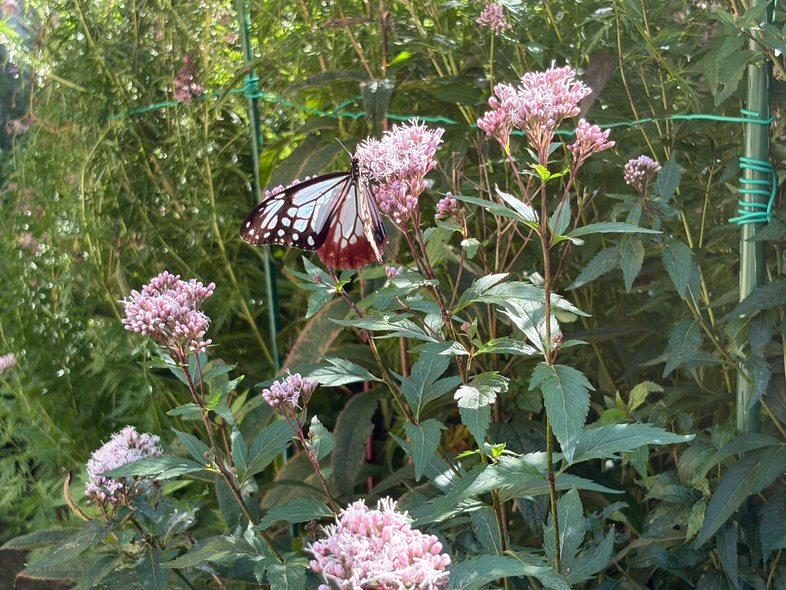
緑の葉を多く残したまま、秋の花を咲かせています
花の下には、まだ緑の葉が多く残っています。茎に沿って葉が重なり、その間から枝が分かれて、先端に花房をつけています。
一部の葉には色むらや小さな傷みが見られますが、株全体では緑がしっかり残っています。花房ばかりに目が向きがちな時期ですが、その下の枝葉も、今の株の姿として記録しておきたいと思います。
赤紫色を帯びた茎、緑の葉、ピンク色の蕾、白い糸状の花が重なり、秋の庭らしい色合いになっています。そこにアサギマダラの淡い翅の色と茶色の縁取りが加わると、育てている花の景色が、また違って見えます。
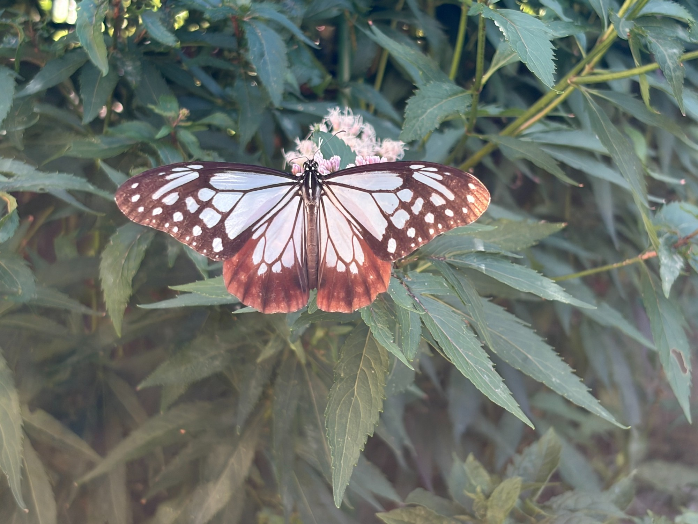
この日は2匹が訪れ、花房で蜜を吸っていました
10月17日は、2匹のアサギマダラがフジバカマ（原種系）の吸蜜に訪れました。2匹が同じ画面に収まる場面もあり、それぞれが花のある場所を利用している様子を残すことができました。
翅を大きく広げた姿では、淡い青白い部分を濃い模様が区切り、後ろの翅には赤茶色が広がっています。日なたと日陰、見る角度によって翅の明るさが変わり、同じ蝶でも印象が違って見えます。
花房にとまった姿を近くで眺めると、蝶の大きさと、その下に集まった小さな花の細かさがよく分かります。私にはひとつの花のかたまりに見える場所も、アサギマダラにとっては、蜜を探す小さな花が集まった場所なのだと感じます。
満開を迎える前から、育てた花が実際に吸蜜の場所になっています。花が全部開くまで待たなくても、この途中の姿に、すでに蝶を迎える役割があることがうれしいです。
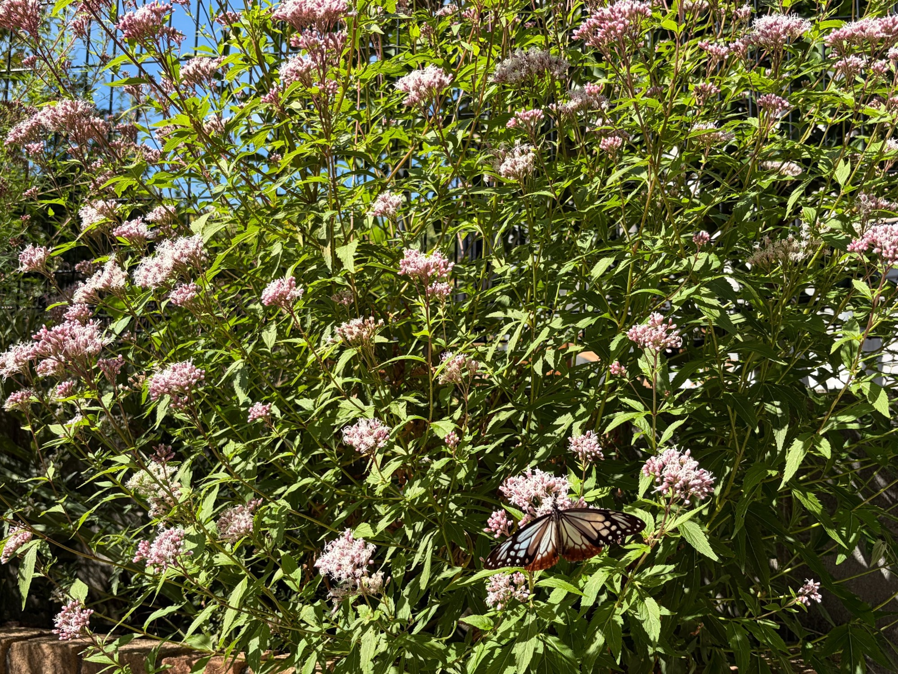
ミドリヒョウモン、ミツバチ、アブ、小さなハナムグリも、合わせて50匹ほどが訪れていました
花を訪れたのは、アサギマダラだけではありません。ミドリヒョウモン、ミツバチ、アブ、小さなハナムグリも、合わせて50匹ほどが蜜を吸い、花の周りを飛び回っていました。
アサギマダラの姿を追っていると、どうしても大きな翅に目を奪われますが、花房をよく見ると、ほかの昆虫もたくさん集まっています。小さな虫まで含めて眺めると、フジバカマの周囲がとてもにぎやかになっていました。
私にとっては、秋の花を楽しむために育てている株ですが、訪れる昆虫にとっては、それぞれが利用できる花の集まりなのだと感じます。花壇の中にこれだけ多くの姿があると、フジバカマが庭の生きものを迎える場所になっていることを、改めて実感します。
アサギマダラ2匹と、ほかの昆虫約50匹。花の咲き具合を見るだけでは分からなかったにぎわいが、花房の上や周囲に広がっていました。
これだけ昆虫が訪れているからといって、蜜の量まで分かるわけではありません。それでも、開花が進んだ今の花が、多くの昆虫に利用されていることは、目の前の姿から感じられます。
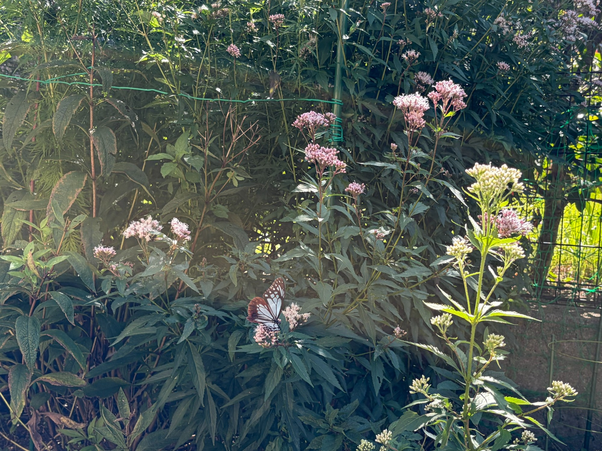
10月12日から17日まで、目で確認できただけで延べ10匹
10月12日から17日までに、庭を訪れたアサギマダラは、私が目で確認できただけで延べ10匹になりました。
これは、庭を一日中見続けて数えたものではありません。私が庭を見ていたときに、実際に姿を確認できた分の記録です。見ていない時間にも訪れていたかどうかは分かりませんが、目の前で確認できた分だけでも、これだけの訪れがありました。
また、延べ10匹というのは、すべて別々の個体と分かったという意味ではありません。同じ個体が別の日にも訪れていた可能性はあります。それでも、その都度、庭でアサギマダラを見られたことを積み重ねると、花が咲く時期と蝶の訪れがつながっていることを身近に感じます。
10月12日は、満開の白フジバカマが吸蜜の中心になり、こちらのフジバカマ（原種系）にも訪れていました。今回は、開花が約80％まで進んだこちらの花で、2匹が吸蜜する姿を見られました。
前回は「これからもっと花が開いたら、どのように訪れてくれるだろう」と考えていました。その後も庭への飛来が重なり、今回も吸蜜を見られたことが、その楽しみの続きになっています。
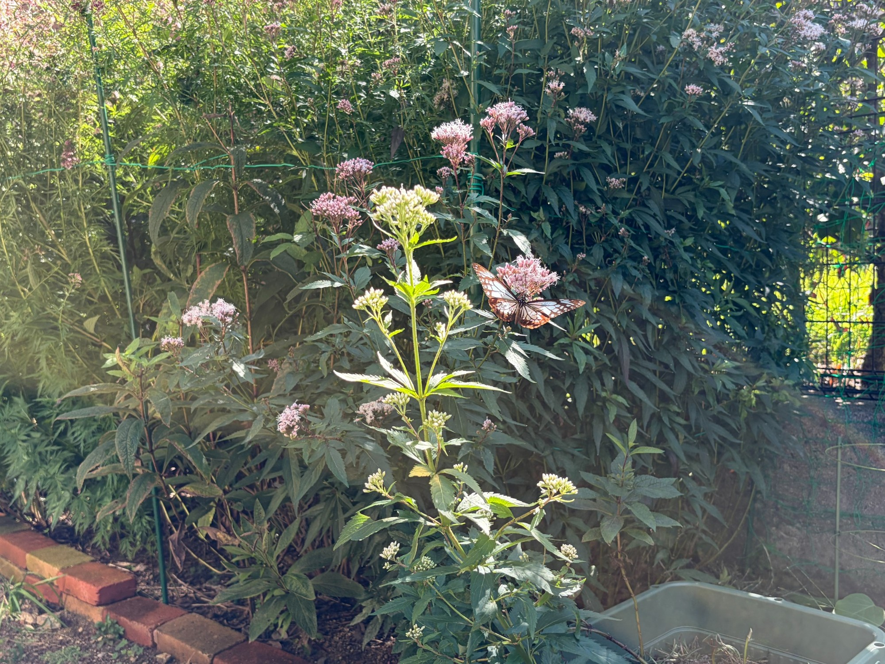
12日は白フジバカマが中心、17日は吸蜜の約90％がこちらの原種系でした
10月12日と17日を比べて、特に印象に残ったのは、アサギマダラが吸蜜する花の割合です。
12日は、満開になっていた白フジバカマ（原種系）が吸蜜の中心でした。こちらのフジバカマ（原種系）は、まだピンク色の蕾が目立ち、開いた花を利用する姿は見られたものの、主な吸蜜場所は白フジバカマでした。
それが17日には、私が見ていた範囲では、吸蜜の約90％がこちらのフジバカマ（原種系）になっていました。前回はこれからの開花を楽しみにしていた株が、今回は吸蜜の中心になったことに、5日間の変化を感じます。
花を育てている私には、白い花房が増えたことが目に見える変化です。そこへ、実際にアサギマダラがよく訪れるようになったという変化が重なりました。見た目の開花だけでなく、蝶が利用する様子からも、今の花の状態を考えたくなります。
12日は先に咲いた白フジバカマ、17日は開花が進んだこちらの原種系。咲く時期に違いがあることで、庭の中の吸蜜場所にも変化が生まれたのかもしれません。
ただ、これだけで、白フジバカマの蜜が減ったから移ったとまでは言い切れません。花の咲き具合のほかにも、訪れた個体や、その日の条件による違いはあると思います。今回の記録では、吸蜜の中心が変わったという、実際に見られた変化を大切に残しておきたいです。
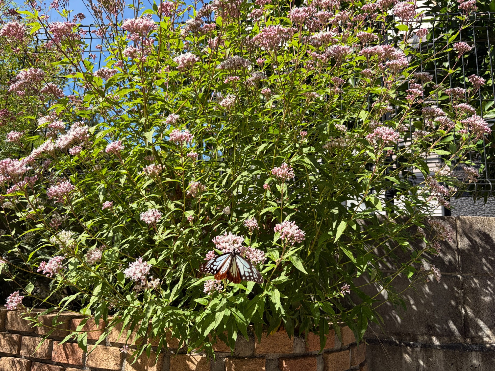
満開の少し前は、吸蜜にちょうどよい時期なのかもしれません
花を育てていると、どうしても「満開になった姿」を一番楽しみにしてしまいます。蕾が全部開き、株いっぱいに花が広がったときが、花にとっても、そこを訪れる蝶にとっても一番よい時期だと考えたくなります。
けれど、今回のように、まだ蕾を残しながら多くの花が開いている姿でアサギマダラが蜜を吸っているのを見ると、満開の少し前こそ、吸蜜にちょうどよい時期なのかもしれないと感じます。
17日は、開花が約80％で、アサギマダラの吸蜜の約90％がこちらの原種系でした。さらに、ミドリヒョウモンやミツバチ、アブ、小さなハナムグリも集まっていました。まだ咲ききっていない花に、これだけ多くの昆虫が訪れていたことが印象的です。
今の株には、すでに開いた花が各所にあり、その周囲には、これから開く蕾も残っています。十分に花がある中で、さらに次の花が開いていく。その重なりが、アサギマダラを迎えるうえでもよい状態なのではないかと思います。
まだ蕾だけの時期では、吸蜜に使える開いた花は限られます。一方で、株全体が咲ききったように見える頃には、先に開いた花は、すでに開花から時間がたっています。そう考えると、開いた花が増え、これから咲く蕾も控えている今の姿は、とても楽しみな段階です。
開花約80％という数字は、満開に届いていないというだけのものではありません。私にとっては、花を十分に楽しめるようになり、そこへ蝶も訪れ、さらに次の開花も待てる時期です。
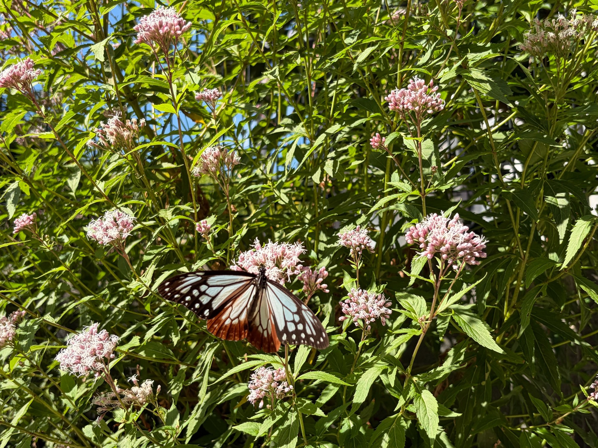
見た目の満開と、蜜の状態は同じとは限りません
花房がふんわり広がっていると、見た目には、まだ十分に咲いているように感じます。ただ、その中の小さな花が、すべて同じ日に開いたわけではありません。開いたばかりの花もあれば、開花から日数がたった花も混じっています。
私が気になるのは、株全体が満開に見える頃には、先に咲いた花の蜜は、すでに衰え始めているのではないかということです。人の目には華やかに見える時期と、蝶にとって蜜を吸いやすい時期には、少しずれがあるのかもしれません。
12日は白フジバカマが吸蜜の中心で、17日は満開手前のこちらの原種系が約90％を占めました。この違いを見ると、花の種類だけでなく、そのときにどの段階の花が多いかも関係しているのではないかと考えたくなります。
満開になった株でも、その中には咲いたばかりの花が残っていることがありますし、まだ蕾が多い株でも、すでに開いている花は利用されています。株全体を一言で「満開」「まだ蕾」と分けるだけでは、小さな花ひとつひとつの状態までは表せないのだと思います。
白い糸状の部分が広がっていることは見て分かりますが、その奥にどれだけ蜜があるかまでは、外から眺めただけでは分かりません。満開に見えるから蜜も一番多い、あるいは、少し茶色くなったからもう蜜がない、と単純には決められないと思います。
だからこそ、花の見た目と一緒に、アサギマダラが実際にどの花房で蜜を吸っているかを見ていきたいです。まだ蕾が残る花房なのか、よく開いた花房なのか。どのような咲き具合の場所を利用するのかが、庭での観察の楽しみになっています。
今のところ、私には、満開へ向かって花が次々と開いているこの時期が、吸蜜にもよい頃のように感じられます。ただ、蜜の量を測ったわけではないので、「80％の開花が必ず一番よい」と決めるのではなく、これから咲き進んだときの姿と比べながら見ていきたいと思います。
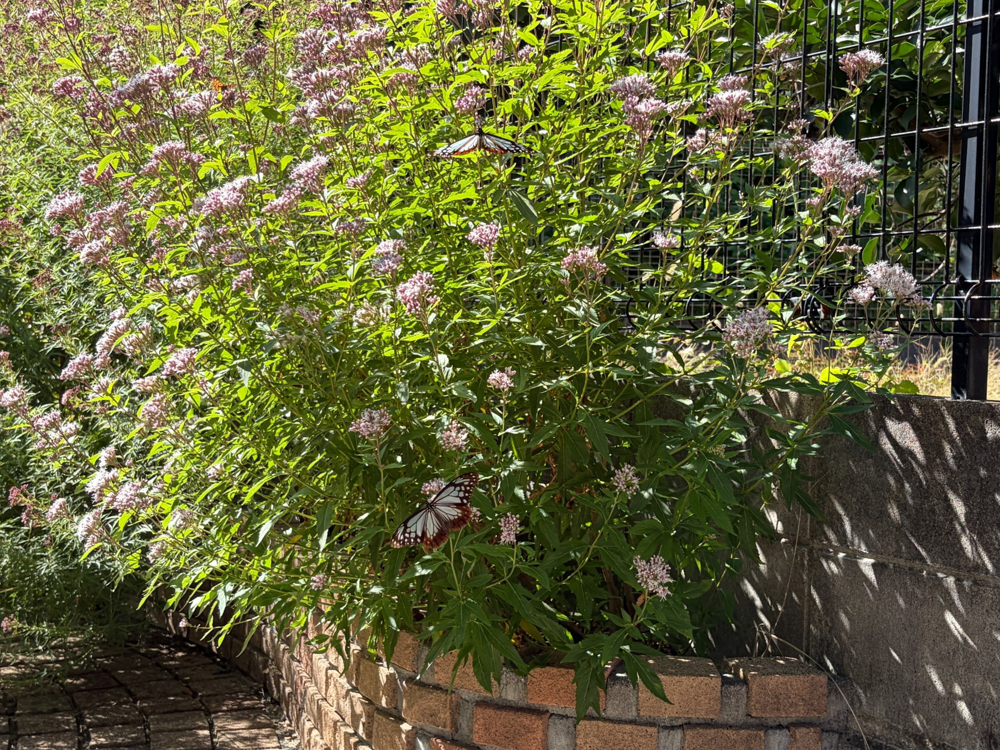
白フジバカマとの開花のずれも、庭の楽しみになっています
10月12日は、白フジバカマが先に満開を迎え、こちらのフジバカマ（原種系）にはまだ蕾が多く残っていました。その5日後に、こちらも約80％まで開花が進みました。
同じ庭でも、すべてが一斉に同じ段階になるわけではありません。先に咲く株があり、少し遅れて花を広げる株があります。花を眺める側としても、その違いがあることで、秋の変化を続けて楽しめます。
アサギマダラにとっても、庭のどこかに利用できる花が残っていれば、立ち寄ったときの吸蜜場所になるのではないかと思います。前回、白フジバカマで見た吸蜜に続き、今回はこちらの原種系で蜜を吸う姿を見られたことが、その期待につながっています。
17日に吸蜜の約90％がこちらの原種系だったことは、開花のずれを考えるうえでも、印象に残る出来事でした。先に咲いた花に続いて、少し遅れて開いた花が利用されることで、庭全体として吸蜜の場所をつなげられているのかもしれません。
ただ、10月12日の白フジバカマでの吸蜜と、10月17日のこちらの花での吸蜜だけで、花の好みが変わったとは言い切れません。咲き具合も日によって変わりますし、訪れた蝶も同じ個体とは限りません。今は、開花の時期が少しずれた花を、それぞれ利用してくれる姿を楽しみたいです。
満開を待つ時間も、蝶を迎える大切な時間になりました
これまでは、枝葉が茂り、蕾がつき、ピンク色が濃くなり、少しずつ白い糸状の花が広がっていく様子を見てきました。今は、そこにアサギマダラの姿が重なっています。
10月17日は、開花約80％。まだ咲ききってはいませんが、2匹のアサギマダラが蜜を吸い、その吸蜜の約90％がこちらのフジバカマ（原種系）でした。
ミドリヒョウモン、ミツバチ、アブ、小さなハナムグリも合わせて50匹ほどが集まり、花の周りはにぎやかでした。そして、10月12日から17日までのアサギマダラの飛来は、目で確認できただけで延べ10匹になりました。
満開になった一日だけが、花と蝶を楽しめる日ではありません。蕾を残しながら咲き進む途中にも、蝶が訪れ、蜜を吸う時間があります。むしろ、その途中だからこそ見られる、開いた花と次の蕾が重なった姿があります。
これから残った蕾が開き、株全体の見え方がどう変わるのか。先に咲いた花に変化が出てきたとき、アサギマダラはどの花房を利用するのか。満開の前と、その先を続けて見ていくことで、花の見ごろと吸蜜の時期について、私なりの気づきを増やしていければと思います。
育ててきたフジバカマが、今年も庭を訪れたアサギマダラの吸蜜場所になってくれました。満開を迎える楽しみと、また蝶に会える楽しみ。その両方を感じながら、これからの花の変化を見守っていきます。